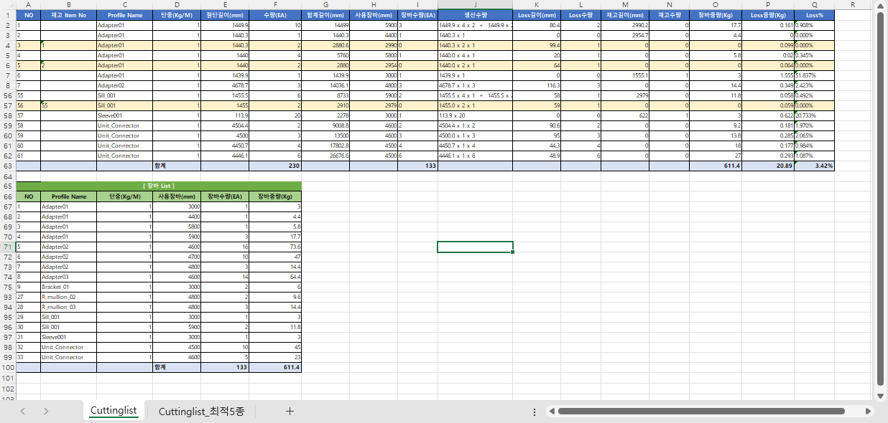

Cuttinglist
Cuttinglist는 선택한 프레임 ProfileData를 절단 길이별로 집계하고, 장바 길이와 Loss를 계산해 절단 계획표를 생성하는 명령입니다. 최적의 장바5종에 대한 추가 list가 제공됩니다. Group, NBlock, Mixed 선택을 모두 지원합니다.
모델링된 프레임 부재의 ProfileData를 부재별·절단 길이별로 집계해 필요한 장바 수량과 Loss를 한 번에 산출할 때 사용합니다. 생산 발주 전 절단 계획과 장바 소요량을 빠르게 확인하는 용도이며, AutoCAD / BricsCAD의 Cuttinglist와 동일한 기능으로 Group·NBlock·혼합 선택을 모두 지원합니다.
FabNo 또는 모델링 후 ProfileData가 있는 객체를 준비합니다.Cuttinglist를 입력하고 Enter를 누릅니다.Auto_Barlist_On 옵션으로 선택합니다.Cut_Interval_Barlist, Cut_Min_Barlist, Cut_Max_Barlist 값을 필요에 맞게 조정합니다.
| 옵션 | 설명 |
|---|---|
Auto_Barlist_On | On이면 Min~Max 범위와 Interval로 장바 리스트를 자동 생성합니다. Off이면 사용자 txt 파일의 장바 데이터를 사용합니다. |
Cut_Interval_Barlist | 자동 장바 길이 간격입니다. 기본값은 100입니다. |
Cut_Min_Barlist | 자동 장바 최소 길이입니다. 기본값은 3000입니다. |
Cut_Max_Barlist | 자동 장바 최대 길이입니다. 기본값은 6500입니다. |
| 항목 | 설명 |
|---|---|
| 절단 계획 | Profile Name, 단중, 절단길이, 수량, 사용 장바, 생산 수량을 표시합니다. |
| Loss / 재고 | Loss 길이/수량/중량과 재사용 가능한 재고 길이/수량/중량을 계산합니다. |
| 장바 List | Profile별 사용 장바 길이와 수량, 총 중량을 별도로 집계합니다. |
| Additional Excel | Python 비교 스크립트를 찾으면 같은 경로에 추가 Excel 파일을 생성할 수 있습니다. |
| 명령어 | 설명 |
|---|---|
Molist | 절단 계획 전 전체 자재 수량과 중량을 확인합니다. |
PMolist | Profile 중심 리스트를 작성합니다. |
FabNo | ProfileData와 Fab No를 생성합니다. |